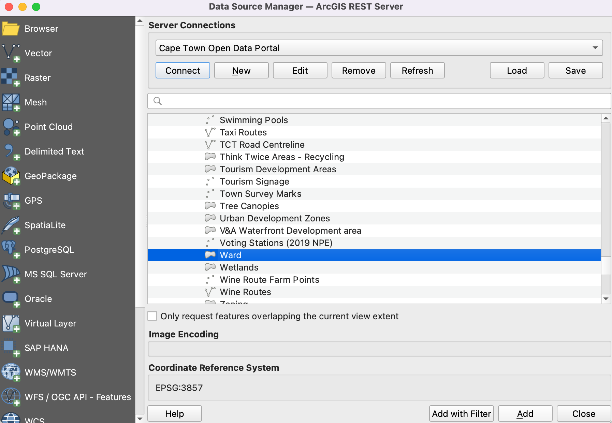
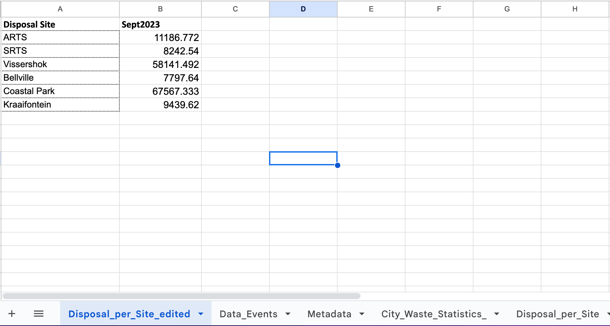
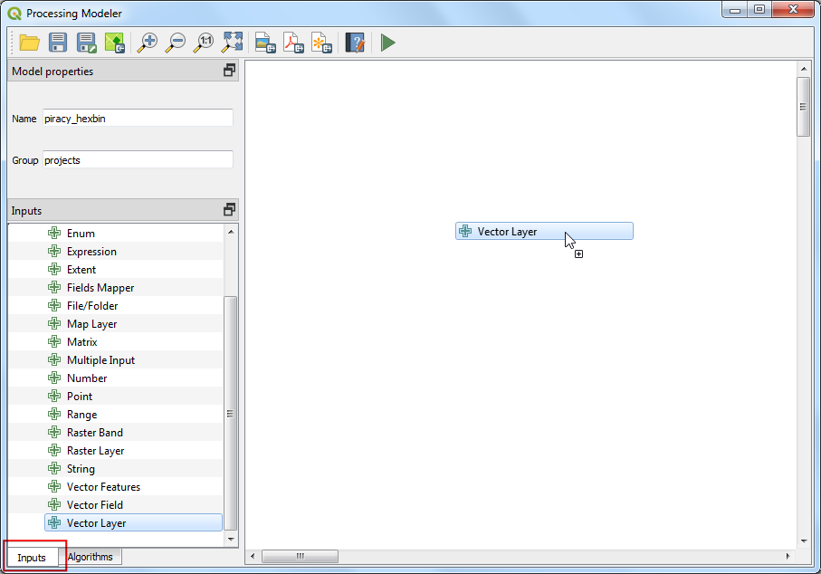
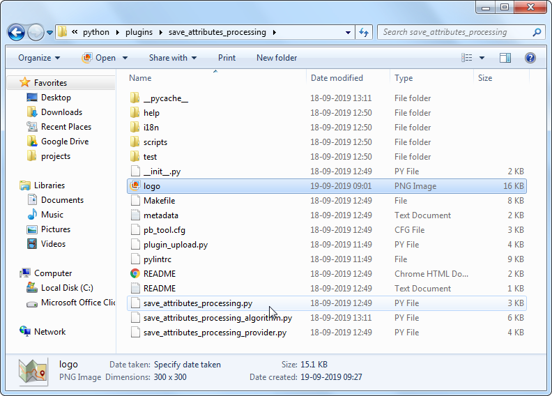

In kaart brengen volumes afvalverwerking (QGIS3)¶
Deze handleiding is ontworpen om u te helpen bij het ontdekken van nieuwe technieken voor het in kaart brengen en cartografische gereedschappen, die beschikbaar zijn in QGIS.
Overzicht van de taak¶
U zult leren hoe puntgegevens voor stortplaatsen op te halen en een kaart met proportionele symbolen te maken, die de hoeveelheid verwerkt afval voor elke stortplaats laat zien.
Andere vaardigheden die u zult leren¶
Importeren van gegevens van de server van ArcGIS in QGIS met REST URL.
Importeren van tabulaire gegevens uit werkbladen in QGIS.
De gegevens ophalen¶
U vindt de gegevens voor de handleiding op het Cape Town Open Data Portal - https://odp-cctegis.opendata.arcgis.com. We zullen de gegevens vanaf het portaal importeren met de ArcGIS Online REST-service en zullen de drie lagen voorbereiden die hieronder vermeld zijn.
Wards: Een polygoon Shapefile met grenzen van wijken van Kaapstad.
Landfill Sites: Een Shapefile met punten van huidige, gesloten en voorgestelde faciliteiten voor verwerken van afval in Kaapstad.
Waste Disposal Data: Een werkblad met de hoeveelheid afval die binnenkomt in de verwerkingsfaciliteiten van de stad.
Laten we stapsgewijze kijken om de gegevensset voor te bereiden voor deze handleiding.
Ga naar het Data Portal - https://odp-cctegis.opendata.arcgis.com/search?tags=. We zullen zoeken naar de gegevens voor
Wardsin de zoekbalk en klikken om verder te bladeren.
Klik op Volledige details bekijken om beschikbare services te verkennen om de gegevens op te halen.

Scroll naar beneden om te zoeken naar Gegevensbron bekijken open dat en klik erop.
Ga, in de ArcGIS REST Services Directory , naar Home en kopieer de URL van die pagina. De gekopieerde URL ziet er ongeveer zo uit - https://citymaps.capetown.gov.za/agsext1/rest/services.

Open nu QGIS en klik op .

De lijst met databronnen staat in het linkerpaneel. Scroll naar beneden naar . Klik op Nieuw om een nieuwe verbinding naar de server te maken.

In de Verbindingsdetails, geef de Naam
Kaapstad Open Data Portalen plak de gekopieerde URL als invoer voor URL.
Klik op OK en dan op Verbinden om de mappen met gegevens te zien die beschikbaar zijn op de server.

Nu zullen we zoeken naar alle drie vereiste lagen voor de handleiding uit de database. Eerst zullen we de laag
Wardsopenen in QGIS. Vergroot mappen om naar de lagen te bladeren. Het volledige pad naar de laag is . Selecteer de laag en klik op Toevoegen.Laten we
Landfill sitesopenen in QGIS. Volledig pad naar de laag is . Selecteer de laag en klik op Toevoegen.
Nu zullen we zoeken naar het werkblad
Waste Disposalin het data portaal. Klik op de gegevenslinkWaste Disposalom het bestand te downloaden.
Het bestand genaamd
Waste Disposal September 2023.odszal worden gedownload na klikken op de link. Open het bestand. Het bestand bevat 3 werkbladen, waarvan we de gegevens vanDisposal_per_Sitezullen gebruiken voor de handleiding.
We zullen alleen de totale stort per stortplaats behouden. Voeg een nieuw werkblad toe, genaamd
Disposal_per_Site_editeden kopieer de gegevens vanaf het werkbladDisposal_per_Site. Bewerk de namen van de stortplaatsen door de haakjes te verwijderen, zodat zij overeenkomen met de attributen van de gegevens vanLandfill sites. De waarden zijn opgemaakte getallen, wijzig die naar eenvoudige decimalen. Sla het op alswaste_disposal_september2023.odsin een gegevensmap voor deze handleiding.Merk op dat er 3 verschillende stortplaatsen zijn voor
Bellvilleen de waarde voor afval is nul voor twee daarvan. Laten we die combineren zodat we alleen de stortplaatsBellvillebehouden waarvan de waardeniet nulis.Schakel naar QGIS. We hebben de Shapefiles al geïmporteerd vanaf de server van ArcGIS. Laten we het in de lokale gegevensmap voor deze handleiding opslaan. Klik met rechts op de laag
Landfill Sites And Refuse Transfer Stations. Ga naar .
Navigeer, in het dialoogvenster Vectorlaag opslaan als, naar de gegevensmap en sla het Shapefile op als
landfill_sites.shp. Klik op OK.
Sla op soortgelijke wijze de laag
Wardop alswards.shpin de gegevensmap. Nu hebben we de gegevensmap voorbereid met alle drie de lagen en zijn klaar om te beginnen met de procedure.
Voor het gemak kunt u hieronder direct een kopie downloaden van deze bestanden:
Procedure¶
Open QGIS. Klik op het pictogram om de laag toe te voegen.

Schakel naar de tab Vector en navigeer naar de gegevensmap en selecteer de bestanden
wards.shpenlandfill_sites.shp. Klik op Toevoegen.
Open de attributentabel van de laag
landfill_sites. Deze laag bevat alle stortplaatsen voor vast afval in Kaapstad. U kunt zien dat het attribuutSTATUSbevat of de faciliteiten operationeel zijn of niet. We kunnen de waarden in die kolom gebruiken om alleen de faciliteiten Current te selecteren.
Klik met rechts op de laag
landfill_sitesen selecteer Filteren.
Voer, in de Querybouwer, de volgende expressie in en klik op OK. "STATUS" = 'Current'

Als het filter eenmaal is toegepast, zal alleen een subset punten zichtbaar zijn op de kaart. Vervolgens zullen we het bestand
waste_disposal_september2023.odstoevoegen. Klik op het pictogram en schakel naar de tab Vector. Navigeer naar het bestand door te klikken op de knop … naast Bestandsnaam. Klik op Toevoegen.In het dialoogvenster Toe te voegen items selecteren, selecteer het item
Disposal_per_Site_editeden klik op Lagen toevoegen.
Open de attributentabel van de laag
waste_disposal_september2023. Deze tabel heeft de namen van de faciliteiten en het totaal aan verzameld afval voor de stortplaats voor de maand september 2023.
Laten we deze tabel samenvoegen met de puntenlaag
landfill_sites. Ga naar op de menubalk.
Zoek en lokaliseer het gereedschap Attributen koppelen op veldwaarde uit de Toolbox. Dubbelklik erop om het te openen.

Selecteer, in het dialoogvenster Attributen koppelen op veldwaarde, landfill_sites als Invoerlaag en NAME als het Tabelveld. Selecteer waste_disposal_september2023 als de Invoerlaag 2 en Disposal Site als Tabelveld 2. Selecteer het vak Records negeren die niet konden worden verbonden. Sla de Samengevoegde laag door te klikken op de knop … en selecteer Opslaan als bestand.

Sla de uitvoerlaag op als
waste_by_station_september_2023.shpen klik op Uitvoeren.

Als de verwerking eenmaal is voltooid zal de nieuwe laag
waste_by_station_september_2023worden toegevoegd die de hoeveelheid afval heeft vermeld in de kolomSept2023.

Laten we nu deze gegevens visualiseren. Selecteer eerst de laag
Wardsen klik op het pictogram .

Stel de symbologie van deze laag in op Enkel symbool met een lichte Vulkleur en Lijnkleur.

Selecteer vervolgens de laag
waste_by_station_september_2023en selecteer het symbool Eenvoudige markering. Klik op het keuzemenu voor Symboollaagtype.

Selecteer
Gevulde markeringals het Symboollaagtype. We zullen nu de grootte van het symbool proportioneel wijzigen naar de hoeveelheid verzameld afval voor de stortplaats. We moeten. om dat te kunnen doen, een Data-bepaalde ‘override’ toepassen - die een veldwaarde of expressie kan toepassen om de grootte voor elk object te berekenen. Klik op de knop Data-bepaalde ‘override’ naast Grootte en selecteer Assistent.

We willen de grootte van de gevulde symbolen baseren op de waarden voor het verzamelde afval. Selecteer het veld
Sept2023als Bron. Stel waarden in van5000tot en met50000. Stel nu de grootte van de cirkel in op1tot en met25. Klik op het pictogram Terug.

U zult cirkels met verschillende grootten zien voor elk punt. De grootten zijn in de eenheid millimeters. De knop Data-bepaalde ‘override’ zal nu geel kleuren om aan te geven dat een override is toegepast voor die waarde.

Laten we meer geavanceerde opties voor opmaak verkennen. Wijzig het Symboollaagtype naar Shapeburst vulling. Selecteer 2 kleuren naar keuze om de cirkels te vullen met een vulling van kleurverloop.

Vervolgens zullen we een Valschaduw effect toepassen op de cirkels om ze eruit te laten springen op de kaart. Dit is bekend als Live laageffecten. Scroll naar beneden en vergroot het gedeelte Renderen van lagen. Selecteer de knop :guilabel:`Tekeneffecten ` en klik op de knop met de ster.

Schakel de optie Valshaduw in.

De kaart ziet er nu aardig goed uit, maar de lezer moet weten welke waarden deze symbolen vertegenwoordigen. Het zou goed zijn een te interpreteren legenda te hebben. Klik op de knop Terug totdat u terug bent in het hoofddialoogvenster van Laag opmaken. Selecteer Markering en klik op de knop Geavanceerd aan de onderzijde. Selecteer Data-bepaalde grootte legenda.

Voer
Verzameld afval (Tonnen)in als de Titel en klik op de knop + om items voor de legenda toe te voegen. Voer, omdat onze symbolen op schaal worden gebracht met een factor 3, de toepasselijke waarden en labels in. U zult nu een nette legenda zien verschijnen in het paneel Lagen. Dezelfde legenda zal beschikbaar zijn in deAfdruklay-outals u een kaart zou willen maken van deze gegevens.

Sluit het paneel Laag opmaken. De visualisatie is voltooid. U hebt geleerd hoe u gegevens in een tabel wijzigt naar een visueel informatieve en attractieve kaart.

If you want to give feedback or share your experience with this tutorial, please comment below. (requires GitHub account)